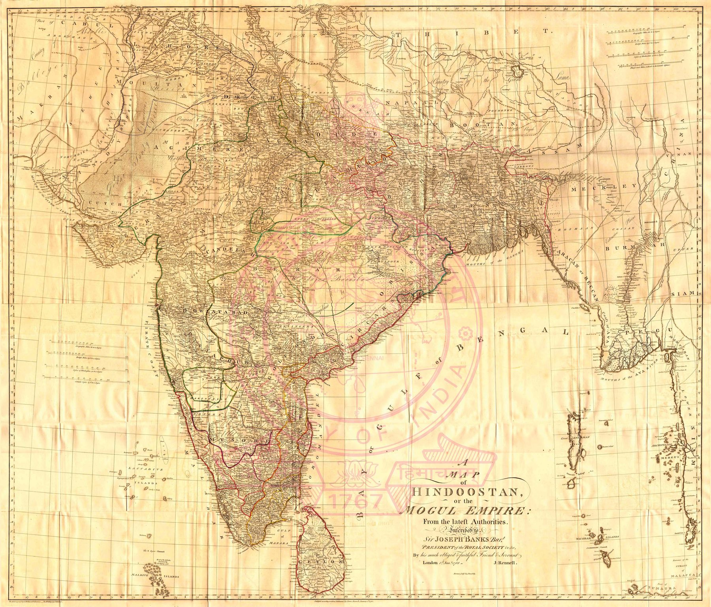

The enlarged Hindoostan
This is the four-sheet map accompanying the 1788 edition of Rennell’s Memoir of a Map of Hindoostan; or, the Mogul Empire. At roughly 1:2,980,000, it is substantially larger and more detailed than the two-sheet map dated 1782. Roads, river systems, provinces and named settlements are spread across a surface designed to be read both as geography and as an index to the accompanying written argument.
Revision as method
Rennell revised the map with every edition as new routes, positions and reports came in. The four-sheet form makes that process visible: survey knowledge is cumulative, assembled from measurements of uneven quality and continually reconciled into a general picture.
The Mughal name after Mughal power
The title retains ‘the Mogul Empire’ even though effective sovereignty had fragmented among the Company, Maratha powers, Mysore, the successor states and numerous principalities. The inherited political label offered European readers a familiar frame, while the map itself increasingly registered the new territorial order created by eighteenth-century war and Company expansion.
The gaze
Between 1782 and 1788 the map grew by two sheets and the empire in its title lost more ground. Rennell kept ‘the Mogul Empire’ while drawing a country the Mughals no longer ruled, and the four-sheet format let every new route report be fitted into the old frame. Revision was continuous; the name was not.